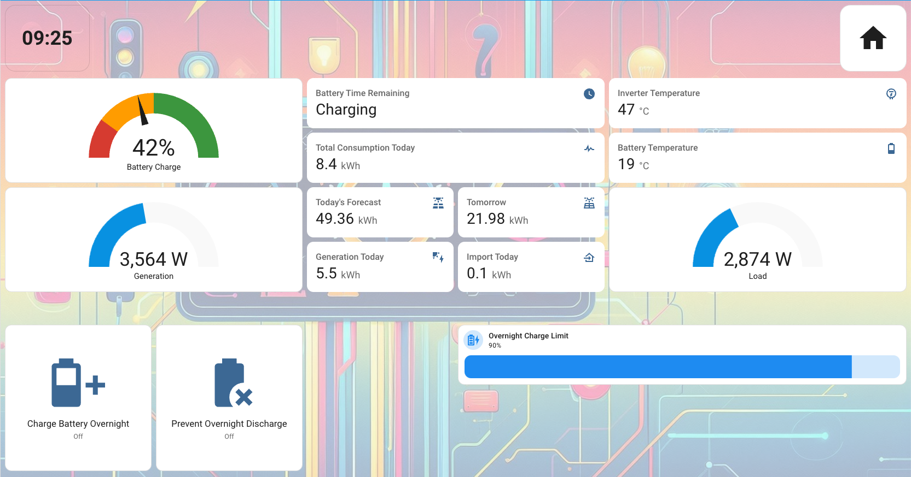

About Me
Hello! I'm Jonathan Greener, a results-oriented Product Manager with 10+ years of experience in FinTech, Commercial Real Estate and Energy/Utilities. I thrive on understanding user needs, defining product vision, and leading cross-functional teams to deliver impactful solutions.
Beyond my professional life, I'm deeply passionate about sustainability and leveraging technology for a greener future. At home, I've dived into the world of Home Assistant, creating a smart ecosystem that not only enhances convenience but actively helps in monitoring and reducing my carbon footprint. This hands-on experience with IoT and data analysis fuels my problem-solving approach in all aspects of my work.
I believe in [mention a core value or philosophy, e.g., continuous learning, data-driven decisions, user-centricity] and I'm always eager to connect with like-minded individuals and explore new challenges.
Product Management Expertise
Product Strategy & Vision
Expertise in defining and communicating product vision, strategy, and roadmaps aligned with business goals and market opportunities. Proven ability to conduct market research and competitive analysis.
Agile & Scrum Leadership
Experienced in leading agile development teams, facilitating scrum ceremonies, and managing product backlogs. Certified Scrum Product Owner (CSPO) or similar (if applicable).
Data-Driven Decisions
Skilled in using analytics, A/B testing, and user feedback to inform product decisions, measure success, and iterate on features for optimal performance.
Technical Acumen
Solid understanding of [mention relevant technologies, e.g., APIs, cloud platforms, software architecture] enabling effective communication with engineering teams.
My Decarbonisation Journey with Home Assistant
I'm passionate about using technology to make a tangible impact on sustainability. My Home Assistant setup is a core part of this, allowing me to monitor, automate, and optimize energy usage in my home.
My Smart Home Setup
Core: Raspberry Pi running Home Assistant OS.
Energy Monitoring: [e.g., Shelly EM, Emporia Vue, specific smart plugs with energy monitoring]. This allows me to track real-time and historical energy consumption of key appliances.
Smart Devices: [e.g., Smart thermostats (Nest, Ecobee), smart lighting (Philips Hue, Zigbee bulbs), smart plugs for various appliances].
Automations:
- Turning off lights in unoccupied rooms.
- Optimizing heating/cooling schedules based on occupancy and weather.
- Alerting on high energy usage anomalies.
- [Add another specific automation you've implemented]
This setup provides granular data that I use to identify inefficiencies and make informed decisions to reduce my energy footprint.
Energy Savings & Impact
Through careful monitoring and automation, I've been able to achieve (or aim to achieve):
[X]%
Reduction in electricity usage (example)
[Y] kWh
Saved annually (example)
This translates not only to cost savings but also a direct reduction in my household's carbon emissions. My next goal is to [mention a future goal, e.g., integrate solar panel data, optimize EV charging].
Visualizing My Impact (Example)
Home Assistant allows for powerful visualizations. Below is a conceptual representation of how I track energy usage:
This could be a screenshot of your actual Home Assistant dashboard or a simplified graph.
Want to discuss smart home sustainability or share ideas? Let's connect!
Let's Connect
I'm always open to discussing new product challenges, innovative tech, decarbonisation strategies, or just connecting with interesting people. Feel free to reach out!